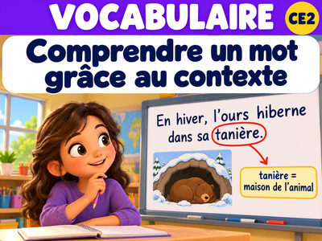
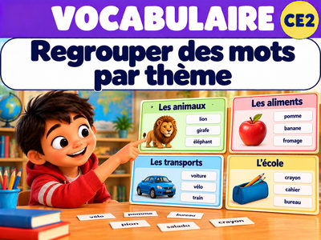
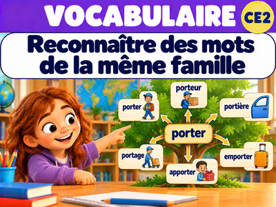
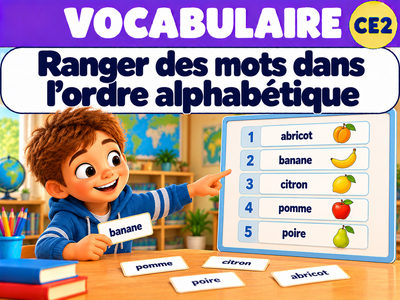
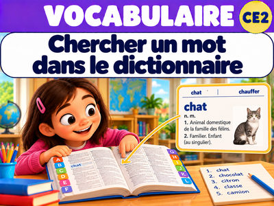

🔤 Mes leçons de lexique
20 leçons · 5 périodes · 200 exercices pour progresser

Comprendre un mot grâce au contexteVOC-P1-01 · 10 exercices interactifs

Regrouper des mots par thèmeVOC-P1-02 · 10 exercices interactifs

Reconnaître des mots de la même familleVOC-P1-03 · 10 exercices interactifs

Ranger des mots dans l’ordre alphabétiqueVOC-P1-04 · 10 exercices interactifs

Chercher un mot dans le dictionnaireVOC-P1-05 · 10 exercices interactifs
P2 · Leçon 01
Reconnaître des mots de la même familleVOC-P2-01 · 10 exercices interactifs
P2 · Leçon 02
Identifier le radical d’un motVOC-P2-02 · 10 exercices interactifs
P2 · Leçon 03
Reconnaître un préfixe ou un suffixeVOC-P2-03 · 10 exercices interactifs
P2 · Leçon 04
Trouver un synonymeVOC-P2-04 · 10 exercices interactifs
P2 · Leçon 05
Trouver un contraireVOC-P2-05 · 10 exercices interactifs
P3 · Leçon 01
Comprendre les différents sens d’un motVOC-P3-01 · 10 exercices interactifs
P3 · Leçon 02
Reconnaître le niveau de langueVOC-P3-02 · 10 exercices interactifs
P3 · Leçon 03
Construire un réseau lexicalVOC-P3-03 · 10 exercices interactifs
P3 · Leçon 04
Utiliser une échelle d’intensitéVOC-P3-04 · 10 exercices interactifs
P4 · Leçon 01
Distinguer sens propre et sens figuréVOC-P4-01 · 10 exercices interactifs
P4 · Leçon 02
Comprendre une expression fréquenteVOC-P4-02 · 10 exercices interactifs
P4 · Leçon 03
Choisir une association de mots fréquenteVOC-P4-03 · 10 exercices interactifs
P5 · Leçon 01
Réinvestir un réseau lexicalVOC-P5-01 · 10 exercices interactifs
P5 · Leçon 02
Utiliser la morphologie pour comprendre un motVOC-P5-02 · 10 exercices interactifs
P5 · Leçon 03
Catégoriser des motsVOC-P5-03 · 10 exercices interactifs
Aucune leçon ne correspond à la recherche.